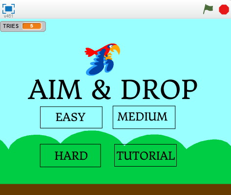
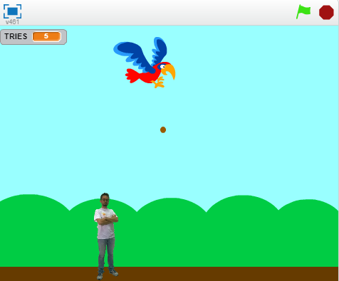
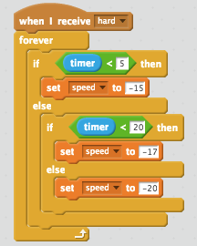
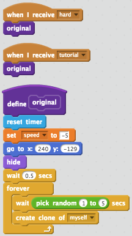

Portfolio
Friends
Aim & Drop
Homepage
Game In Play
In Aim & Drop, there is a parrot flying in the air. You can control
when the parrot can poop. The goal of the game is to poop on a man
when he passes by. The kind of scoring system I implement is a score
of having three tries to poop on a man. The randomness occurs when
the man appears as he comes across the screen when it is expected.
The game becomes harder when you pick on different levels of
difficulty. You are able to win the game if you are able to poop on
the man within three tries. If you fail to do so within the given tries
then you lose.
I created this game because I wanted to make a simple game enough
for everyone can play, but I wanted it to be unique enough compared to
the other games being created. My inspiration of the game's concept
came from a similar game called Space Shooter. One successful point
in my game was making the background shift back and forth to another
background image in order to make the game look like it was moving
forward continuously. Another successful point was my game's homepage
as I was able to make it easy enough for my users to navigate through.
However, I struggle to create certain parts of the game. For example,
I struggle to make the man to move across the screen and disspear
once it reaches the other end of the screen. I was able to solve this
problem by using a block for it to move across the x axis until it
hits -235 on the x axis. Once it reaches this point, I added a
"delete this clone" block so the sprite will disappear. Another
obstacle was figuring how to make the homepage hide once the game
starts. I soon was able to realize that I could utilize the broadcast
block to help me the solve this problem. First I used a "if" block
and said that if this level of difficulty or tutorial is chosen then
it would send a broadcast to the other sprites to disappear, and it
would send one to itself to hide as well. Then I inputted this into
the other homepage sprite to do the same. If I had more time to
improve my game, then I would've added more diversity in the people
for the parrot to poop on. Also I would've made the people have a
reaction and do a certain action once the bird does poop on them.
Algorithm
An algorithm that is important to the game is this "if-else"
statement that is used to moderate and control the speed the man
depending on the level of difficulty chosen. For instance, if
the hard level was chosen then the man would receive a broadcast to
activate this certain script. This specific script is an algorithm
because it executes step to step commands and utilizes a specific set
of instructions. For example, once the script receives a broadcast to
activate it, then it goes through the first step of an "if-else" block
which tells it to set the speed to -15 if the timer is less than 5
seconds. However if the timer surpasses 5 seconds then it will execute
the second step to change the speed to -17, or else, if the time is
past 20 seconds then this will lead to the last step which is to
increase the speed up to -20.
More Blocks
Link to Game:
Aim & DropFriends
In the Choose Your Own Adventure game, "Friends", a boy is asked
to hang out with his friends. From that moment, the player is able
to control the boy's actions as they are allowed to make decisions
for him. However, the player must choose wisely because depending on
their choice, this may lead the boy to either a good or bad outcome.
The game, "Friends", was a process of incremental development as
I created a flow map to build the game's storyline, including defining
game's major funtions: intro(),leave_home(), stay_home(), robber_enter(),
late(),and punctual(); containing the details of the story. Another
incremental process was allowing all the scenes connect to each other.
I had to call out the function inside the definition of another function
so the scene would flow to the next one. An iterative process I faced
was when the game wouldn't stop when it reached a conclusion,
continuing to run another outcome. This was due to calling out
multiple functions when I only needed to call the first function.
Another obstacle I encountered was when I was when I received in error
when I typed yes or no. I realized my while statements were incorrect
since I wrote that while the answer != "x" or "x", when it should've
been "not in [x, x]" since it included the letters that are necessary
for the statement to function.
Organizing the scenes of my story are a procedural abstraction
because it allows the code to become simplified as the coder is able
to just call on the function using just a word. Furthermore, by having
each scene being called on one at a time, this creates an organized
procedure and makes it easier for the coder to locate specific scenes.
A story that I liked was "Love O2O" because the program flowed
very smoothly. Furthermore, even though the genre romance is usually
cliche, this game's romance storyline was very unique in compraison
to normal stories of this genre. Hence, that is why I found "Love O2O"
very memorable.